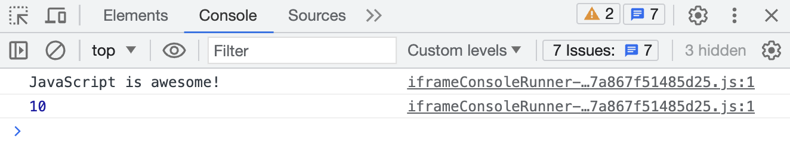

Metoda console.log() - Deweloper musi sprawdzić poprawność aplikacji w określonym momencie i wyświetlić
informacje w określonym miejscu w
kodzie.
Do tego służy konsola w narzędziach deweloperskich przeglądarki w zakładce Console.
Następujące skróty klawiaturowe otwierają narzędzia deweloperskie w zakładce Console:
Windows і Linux — Ctrl + Shift + J
Aby wyprowadzić dane do konsoli dewelopera, użyj metody console.log().
console.log(value);
Wartość value, podana w nawiasie zostanie wyświetlona w konsoli dewelopera podczas wykonywania programu.
console.log("JavaScript is awesome!");
console.log(10);
Po uruchomieniu tego kodu w konsoli dewelopera wyświetlony zostanie kolejno ciąg znaków i liczba.
